Recipe Book & Crafting Calculator

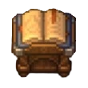

Welcome to the Graveyard Keeper 2 crafting guide and recipe book. Here you can find the materials needed for each structure, as well as a breakdown of raw materials to help you plan your crafting sessions.
Main Categories
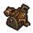 Crafting |
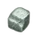 Base Materials |
|---|---|
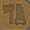 Tools |
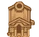 Places |
Crafters
| Place | Craft | Materials | Total Raw Materials |
|---|---|---|---|
| Cabin | 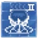 Kitchen Oven II |
▶ View the total amount of pure resources needed...
Tools / Required stations:
Raw Materials Shopping List (Raw):
| |
| Crypt | 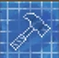 Underground Well |
||
| Morge | 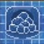 Dumping Site for Corpses |
|
|
| Morge | Block 1 |
|
|
| Morge | Block 2 |
|
|
| General | 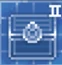 Chest |
|


Base Materials
| Material | Where / How to Get It | Station / Tool |
|---|---|---|
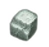 Stone |
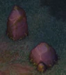 |
Pickaxe |
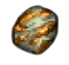 Iron ore |
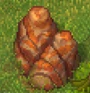 |
Pickaxe |
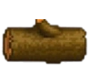 Firewood |
Axe |


Tools
| Tool | Where / How to Get It |
|---|---|
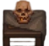 Lorem Input |
|
| Lorem Input | 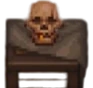 |
| Lorem Input | 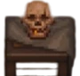 |

Places
| Place | Where |
|---|---|
| Cabin | |
| Cript | |
| Lorem Input |
- ↑ You should follow the tables exactly as they are. You must upload a photo of the material, its name, and how it's obtained or what it's made from. Or how much of it is required (if it's for crafting something).